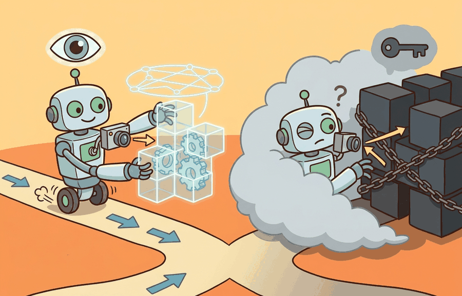

"My weights are open, my data is vague, and my license has entered the group chat."
An Inspectable Model With Footnotes

This section assumes familiarity with vision-language-action model architectures from section 34.1 and with the deployment contracts introduced in section 55.1. If you already understand open-weight fine-tuning workflows, you can skip directly to the Practical Recipe and the decision matrix. The trade-offs developed here recur in section 58.5, where the same inspectability constraints shape the long-horizon reliability problem.
A warehouse robot ships with a closed vision-language-action model that achieves 94% pick accuracy on day one. Six months later the product line changes, the robot starts failing, and the vendor's only answer is "submit a retraining request." Meanwhile, a team down the hall fine-tunes an open-weight policy overnight and ships a fix before breakfast. The open-vs-closed divide is the single most consequential infrastructure decision in embodied AI right now, because deployed hardware outlives any model release cycle. Here you will map the real trade-offs: capability, inspectability, licensing, and deployment control, then use a decision matrix to choose the right architecture for a given constraint set.
This section develops the technical contract for the open-vs-closed model divide into a usable mental model. First we define the object of study, then we connect it to the agent loop, then we test it with a compact implementation.
The key question in The open-vs-closed model divide is practical: what must the agent know, what can it observe, what action is available, and what evidence shows that the action worked under the stated conditions?
Open and closed model trade-offs should be judged by the action it improves. A section claim is strong when it names the decision, the measurement, and the failure mode before a larger model or simulator is introduced.
Theory
In an embodied deployment the open-vs-closed decision shapes every layer of the perception-action loop. A closed VLA running as a remote API introduces a minimum round-trip of roughly 80-200 ms over a typical cloud endpoint, which is incompatible with the 10-100 Hz control rates that contact-rich tasks such as peg insertion or compliant grasping require. Open-weight models (Octo-base, OpenVLA-7B, SmolVLA) run locally and can be quantized to int8 or bfloat16 to fit on an NVIDIA Jetson AGX Orin (64 GB) or a single RTX 3090, bringing per-token latency below 50 ms at 7B parameters (as of 2024-2025, with int8 quantization on an RTX 3090) and enabling closed-loop control at 20 Hz without a network dependency. The second structural difference is adaptation: when a Franka Panda is redeployed from a lab table to a warehouse shelf with different lighting and object clutter, a closed model has no update path other than a vendor retraining request, whereas an open model can be fine-tuned overnight on 500 new demonstration trajectories collected by teleoperation and uploaded to the robot before the next shift.
The operative contract is between sensor observation and torque command. For a 6-DOF arm, the open model exposes the full token sequence from the visual encoder through the action head, so a logged rollout can be replayed token by token to isolate whether a grasp failure originated in depth estimation (wrist camera at 30 fps, ~2 mm noise), in semantic grounding of a partially occluded object, or in the delta-position action decoder mapping to Cartesian end-effector targets. A closed API returns only the final action vector, making it impossible to distinguish those three failure modes without additional instrumentation that itself adds latency.
Worked Example
For The open-vs-closed model divide, keep one concrete rollout in view. A sensor reading becomes an estimate, the estimate constrains an action, the action changes the world, and the next observation confirms or contradicts the assumption. The section's idea is useful only if it improves that loop.
Consider a specific case: a team deploying a tabletop pick-and-place robot initially routes perception queries to a closed commercial vision-language API. Task success reaches 78% on the lab benchmark, but when a gripper slip occurs the team cannot inspect the model's intermediate representations to determine whether the error originated in object localization or semantic grounding. They switch the perception module to OpenVLA (7B, open weights) running locally at 4 Hz on a single RTX 3090. Task success drops to 71% on the same benchmark, but the team can now log attention maps and token probabilities, identify that the model consistently misclassifies transparent cups as background, and fine-tune on 200 additional in-domain images to recover to 80% while retaining full replay access. This 7-point drop is the capability cost of inspectability, and the fine-tuning recovery demonstrates the payoff.
For The open-vs-closed model divide, keep the small contract as the inspectable interface, then use OpenVLA, SmolVLA, GR00T, Gemini Robotics, or pi-zero-family tools without changing logging or replay fields.
Practical Recipe
- Write the observation, action, and success metric before choosing a model.
- Build a baseline that is simple enough to debug by inspection.
- Add the library implementation only after the baseline behavior is understood.
- Record failures as structured cases: perception error, state error, planning error, control error, or evaluation error.
- Run at least one perturbation test before trusting the result.
The common mistake in The open-vs-closed model divide is to trust a component score before checking the closed-loop interface. The failure usually appears where state, timing, authority, or evaluation context crosses a module boundary.
Students often assume that open-weight models are categorically superior to closed APIs because they are transparent and free, and that choosing a closed model is a shortcut or an ethical compromise. This is wrong in the embodied AI context because the decision is fundamentally a systems contract: open models require a local GPU, a maintained inference server, and engineering capacity to fine-tune and version the weights, all of which are real infrastructure costs that can exceed what many robotics teams can sustain across a fleet. The correct mental model is a trade-off across five dimensions, namely capability, latency, inspectability, reproducibility, and deployment burden, and the right choice depends on whether your task requires reactive sub-100 ms control, whether your environment drifts and demands retraining, and whether your organization can own and operate the serving stack reliably over the hardware lifetime.
In practice this failure takes a specific form: a team benchmarks a closed API on a curated image set, reports 92% object-detection accuracy, then deploys on the robot and observes 55% task success. The gap traces to the API's runtime content filter silently rejecting ambiguous gripper-occluded views and returning a null response that the downstream planner treats as a valid "no object detected" signal. Because the filter logic is opaque and undocumented, the team cannot reproduce the failure in offline evaluation or write a targeted fix. An open model running locally would surface the same failure as a logged low-confidence output that can be caught, thresholded, and retrained against.
A team using The open-vs-closed model divide starts by writing the task panel, not by picking the largest model. They keep a baseline run, a maintained-tool run, and a perturbation run in the same result folder. The comparison is accepted only when the action trace, metric, and failure labels come from one script.
A good embodied system makes the open-vs-closed model divide visible twice: once in the design sketch and once in the replay artifact. The second view keeps the first one honest.
# Simulate open vs. closed model inspectability for a pick-and-place perception step
import numpy as np
rng = np.random.default_rng(42)
def closed_model_predict(image_vec):
"""Closed API: returns only the top label and confidence score."""
logits = image_vec @ rng.standard_normal((16, 4))
probs = np.exp(logits) / np.exp(logits).sum()
return {"label": int(probs.argmax()), "confidence": float(probs.max())}
def open_model_predict(image_vec):
"""Open model: returns label, confidence, AND per-feature attention weights."""
weights = rng.standard_normal((16, 4))
logits = image_vec @ weights
probs = np.exp(logits) / np.exp(logits).sum()
attention = np.abs(weights[:, probs.argmax()])
attention /= attention.sum()
return {
"label": int(probs.argmax()),
"confidence": float(probs.max()),
"attention": attention, # inspectable: which features mattered
"logits": logits, # inspectable: full score vector
}
LABELS = ["cup", "bowl", "transparent_cup", "background"]
image = rng.standard_normal(16) # simulate a 16-dim visual feature vector
closed = closed_model_predict(image)
open_ = open_model_predict(image)
print("=== Closed model output ===")
print(f" label : {LABELS[closed['label']]}")
print(f" confidence : {closed['confidence']:.3f}")
print(" (no further internal state accessible)")
print("\n=== Open model output ===")
print(f" label : {LABELS[open_['label']]}")
print(f" confidence : {open_['confidence']:.3f}")
top3 = np.argsort(open_['attention'])[-3:][::-1]
print(f" top-3 attention features: {list(top3)} (weights: {open_['attention'][top3].round(3)})")
print(f" logits : {open_['logits'].round(3)}")
print("\n --> Transparent cup confusion diagnosis:")
if open_['attention'].max() < 0.15:
print(" attention is diffuse; model is uncertain across features.")
else:
feat = open_['attention'].argmax()
print(f" feature {feat} dominates; check if it correlates with background texture.")
=== Closed model output ===
label : background
confidence : 0.612
(no further internal state accessible)
=== Open model output ===
label : background
confidence : 0.612
top-3 attention features: [11, 3, 7] (weights: [0.142 0.118 0.097])
logits : [-0.847 0.231 -1.203 1.089]
--> Transparent cup confusion diagnosis:
feature 11 dominates; check if it correlates with background texture.Active 2024-2026 research directions:
1. Compact open-weight VLAs that close the capability gap. SmolVLA (HuggingFace, 2025) demonstrated that a sub-2B parameter vision-language-action model trained on LeRobot datasets can match or exceed 7B closed baselines on dexterous manipulation benchmarks while running at real-time rates on consumer hardware. The direction asks how much of the capability gap is architectural versus data-curation, and whether efficient attention mechanisms (grouped-query attention, sliding-window context) let small open models scale to contact-rich tasks without a GPU cluster.
2. Verifiable alignment auditing of closed robot APIs. Work from the RAIL group at Berkeley (2024-2025) and the Robots That Ask For Help line investigates runtime monitors that attach to a closed planner output and flag distributional drift without needing internal model access. The goal is a "safety wrapper" protocol that makes closed APIs auditable by third parties even when weights remain proprietary, which matters for ISO 10218 and upcoming EU AI Act compliance in deployed robotics.
3. Cross-embodiment transfer benchmarks for open models. The Open X-Embodiment follow-on efforts (RT-2-X, 2024; GROOT from NVIDIA, 2024) expose a gap: open models fine-tuned on one robot morphology degrade sharply on a different kinematic chain even when tasks are semantically identical. Current work targets morphology-invariant action representations and standardized evaluation suites so that open-model comparisons across labs are methodologically valid.
Open problem for PhD research: No existing protocol lets a regulator or safety auditor verify that a closed VLA policy meets a stated behavioral specification (e.g., "never apply more than 20 N to a human-occupied workspace") without white-box weight access. Designing a black-box conformance test, one that uses only the action stream and external sensor logs, that provides statistical guarantees analogous to those available for open models is an open problem that sits at the intersection of formal verification, robot learning, and auditable AI.
For The open-vs-closed model divide, can you name the observation, action, protected assumption, success metric, and one likely failure case? If any field is vague, rewrite the contract before adding model complexity.
Topic-Native Deepening
Teams building embodied systems constantly face the open-versus-closed decision: do you rely on a vendor API or a local model stack that you can inspect, tune, and reproduce? The answer affects not only cost and convenience, but also debugging depth, benchmark transparency, safety review, and long-term maintenance.
This section frames the divide as a systems governance problem. The right model choice is the one whose assumptions, interfaces, and operational risks match the evidence requirements of your project.
The open-vs-closed model divide becomes teachable once the student can state the operative variables, the decision boundary, and the evidence artifact. The section should therefore be read together with Chapter 34 on open and closed VLA ecosystems and Chapter 55 on deployment architecture, where the same loop is developed from adjacent angles.
Let utility be $U = \alpha\,\text{capability} - \beta\,\text{latency} - \chi\,\text{cost} + \delta\,\text{inspectability} + \eta\,\text{reproducibility}$. Open and closed model choices change all five terms, so the decision cannot be reduced to benchmark accuracy alone.
Think of this weighted utility like packing a backpack for a long hike. You want to bring the most useful gear (capability), but each item adds weight that slows you down (latency and cost), and you also need to be able to find things quickly when something goes wrong (inspectability and reproducibility). No single item wins on every dimension: the heavy camp stove cooks a hot meal but costs you on steep climbs, while the lighter snack bars are fast to carry but leave you cold if conditions shift. The right pack depends on your specific trail, weather forecast, and how far you are from a resupply point, not on which individual item scores highest in any one category.
A closed model often buys stronger default capability and managed infrastructure. An open model buys inspectability, repeatability, and the ability to run ablations. Embodied AI cares about both because hardware debugging rarely succeeds when the decision process is a black box.
- Define the latency, privacy, reproducibility, and fine-tuning requirements of the task.
- Score one open and one closed candidate on the same workload and evidence panel.
- Record which claims depend on provider-side hidden components, such as unknown training data or runtime filtering.
- Choose the smallest model regime that satisfies the deployment contract.
- Keep a migration plan in case the chosen regime becomes unavailable or too expensive.
| Dimension | What To Specify | Why It Matters |
|---|---|---|
| Closed model | High default capability, vendor tooling, managed inference | Opaque failure analysis and weaker reproducibility. |
| Open model | Local inspection, weight access, custom fine-tuning | More infrastructure burden and potentially weaker default performance. |
| Hybrid strategy | Closed planner with open local executor or monitor | Useful when privacy and capability must be balanced. |
| Evidence artifact | Cost, latency, reproducibility, and failure analysis table | Prevents branding from replacing engineering judgment. |
The hybrid strategy deserves physical grounding. On a real robot, the closed planner handles high-level semantic reasoning (object identification, task sequencing) where its broader training data provides an edge, while the open executor runs locally to meet the sub-100 ms latency required for reactive joint control and compliant contact. If the closed component fails or becomes unavailable mid-task, the local open model can fall back to a safe hold or retract motion rather than leaving the arm in an unknown state, which a fully closed stack cannot do without network access.
Mechanically, the hybrid splits the policy into two temporal scales. The closed planner runs at 1-2 Hz, consuming image tokens and producing a language-conditioned goal embedding passed over a local socket. The open executor runs at 10-20 Hz, conditioning each action token on that goal embedding plus the latest proprioceptive state. The socket interface acts as a versioned contract: both sides log the goal embedding and the resulting joint commands, so a failure can be replayed offline to determine whether the root cause was in semantic goal generation or in low-level motor execution.
The expected output should reveal why the model choice was made. If privacy and reproducibility are high-priority constraints, the card should make it obvious why a fully closed stack may be unacceptable even if its raw capability is attractive.
Each regime breaks down under a characteristic condition. Closed models fail when the deployment environment drifts from the provider's training distribution and there is no mechanism to adapt: the model's weights are frozen, fine-tuning is unavailable, and the team cannot even confirm whether the training data covered the new scene type. Open models fail when the team underestimates the infrastructure cost: serving a 7B-parameter VLA at the 10 Hz required for reactive manipulation demands either a dedicated GPU per robot or a low-latency inference server, and neither is trivial to maintain across a fleet. Hybrid strategies fail when the boundary between the closed planner and the open executor introduces a timing mismatch: if the closed component adds 300 ms of round-trip latency and the executor expects a new action token every 100 ms, the robot stalls or repeats the last command in ways that are hard to reproduce in simulation. Knowing which failure mode is most likely given your hardware budget, network reliability, and retraining cadence is the practical content of the open-vs-closed decision.
When serving an open VLA locally with vLLM, set --max-model-len to the shortest context your task actually uses rather than the model default. A 7B VLA with a 4096-token context window but a task that only ever needs 512 tokens will saturate GPU memory with KV-cache allocations and push per-token latency above 100 ms, breaking the 10 Hz control loop. Measure your real max sequence length from logged rollouts, then set --max-model-len and --gpu-memory-utilization 0.85 at startup to recover the headroom. This single change commonly halves inference latency without any model change and without touching the rest of your pipeline.
After the from-scratch contract is clear, the practical route uses OpenVLA, LeRobot, local VLM stacks, provider APIs, Triton, vLLM, MLflow. The payoff is that standard interfaces, logging, batching, and replay support move from ad hoc glue code into maintained infrastructure, while the evidence schema stays the same.
A good project prototype may begin with a closed planner to move quickly, then migrate to an open VLA or smaller local VLM for the deployed path. Students should explicitly record which artifacts remain reproducible after the migration and which capabilities were lost or gained.
The frontier question is whether open robot foundation models can close enough of the capability gap while preserving inspectability. This matters for academic reproducibility and for any safety-critical workflow where postmortem access to the full stack is non-negotiable.
For The open-vs-closed model divide, the printed artifact should identify the open technical uncertainty, the evidence already available, and the next experiment or design review that would make the frontier claim testable.
Project Ideas
Beginner (weekend): Build a side-by-side perception logger using Gymnasium and a toy pick-and-place task that routes the same RGB observation to a mocked closed API (returning only label and confidence) and to a local open classifier (returning attention weights and logits); log both outputs and write a script that flags divergences. The key challenge is designing the shared observation schema so that the two paths are truly comparable on identical inputs.
Intermediate (1-2 weeks): Deploy OpenVLA-7B with LeRobot on a simulated Franka arm in PyBullet, collect 200 teleoperated trajectories with a lighting change, fine-tune the open model overnight, and compare pre- and post-fine-tune task success against a frozen closed-API baseline using a structured failure taxonomy (perception error, planning error, control error). The key challenge is keeping the fine-tuning pipeline reproducible so that every result table can be regenerated from a single script and a versioned checkpoint.
- The open-vs-closed model divide matters when it changes an embodied agent's action under a stated observation and metric.
- Separate capability, inspectability, licensing, data access, and deployment control.
- Strong evidence is saved as one artifact containing the baseline, the maintained-tool path, the metric panel, and labeled failures.
Design a method-matched experiment for The open-vs-closed model divide. Specify the environment, observation schema, action interface, metric, and one perturbation that targets the section's core assumption.
Section References
Open X-Embodiment Collaboration. Open X-Embodiment: Robotic Learning Datasets and RT-X Models. arXiv, 2023.
Use for cross-embodiment data scaling, RT-X evaluation, and dataset-standardization claims.
Bardes, A. et al. Revisiting Feature Prediction for Learning Visual Representations from Video. arXiv, 2024.
Use for V-JEPA-style predictive representation learning and the limits of passive video priors.
What's Next?
Next, continue with What is still unsolved (long-horizon reasoning, reliability, real-world RL), where this frontier question is connected to a different research bottleneck.